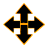
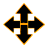
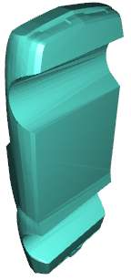
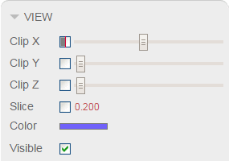

Guide 3. How to prepare a model for 3D printing.
Making
real object from a 3D model is sometimes a complex project. The model
requires certain qualities in order to be produced correctly. 3DView
has tools to assess your 3D model for 3D printing and other
processes and repair it.
Below you can find qualities of a 3D model you should take into account:
To see boundaries of a 3D printer please go to menu "3D Printing" > "Add 3D Printer"; then select a printer in the Objects Tree and set a printer in the "3D Printer" tab. If your printer is not listed in the available profiles - you can set its dimensions and other settings manually.
 icon
(or press ).
By applying automatic positioning again you will put your models to
their original places.
icon
(or press ).
By applying automatic positioning again you will put your models to
their original places.
Also you can position selected models manually by enabling translate mode (or press ) and then use translation controls as described here.
If your model is too large or to small, it could mean the model is in wrong units. You can convert units of selected parts by using a menu item "Edit" > "Units Conversion" or keyboard shortcuts
Besides the "layer" structure you may want to optimize the Z height of the part. Taller parts require more time to print and supports material. They are often more expensive. You can reduce print time and expenses simply by rotating your part to minimum Z height.
To rotate selected models, enable rotate mode (or
press )
and then use rotation controls as described here.
(or
press )
and then use rotation controls as described here.
To detect holes -press button (or press ). When enabled, hole boundaries are shown with a yellow color.
The holes that represent a missing piece of planar surface are called planar holes.
To fill a planar hole, go to "Fixing" > "Fill Hole" (or press ) and then click on the edge of the hole.
Also when a single hole consists of 2 or more boundaries - it is required to merge boundaries so it is filled as one hole.
In both cases you will need a "bridge", cutting a single hole or joining separate holes.
To create a bridge, go to "Fixing" > "Create Bridge" (or press ) and then separately click on 2 opposite boundary edges.
Filling non-planar hole:
Merging a complex hole with 2 boundaries:
To remove unwanted shells - split the model into shells ("Edit" > "Split Shells"), select unnecessary shells and remove them ("Edit" > "Delete" or key). After unwanted shells are removed - select parent object from the Objects Tree and merge shells into single part again ("Edit" > "Merge Children").
 button (or
key), every model you select will be analyzed for minimal thicknesses
and self-intersections. Surfaces with thin walls will get a color
varying from green (thickness close to minimal) to red (thickness less
than minimal)). You can set desired wall thickness in the Analysis tab on a sidebar.
button (or
key), every model you select will be analyzed for minimal thicknesses
and self-intersections. Surfaces with thin walls will get a color
varying from green (thickness close to minimal) to red (thickness less
than minimal)). You can set desired wall thickness in the Analysis tab on a sidebar.
Also you can check wall thickness at any point of a surface by using "Measure Thickness" button
3DView allows detection of such surfaces with Structural Analysis.
In most cases, such types of errors typically require model re-design or complex/expensive software tools.
In some cases you can get rid of some intersections by applying "Remove Sharp Faces" or "Reduce Faces" operations from fixing menu in 3DView.
Previous guide: Where to get
3D models Next guide: How to print your 3D model
Below you can find qualities of a 3D model you should take into account:
- Position and Size
- Orientation
- Surface Normals
- Holes
- Shells and Features
- Wall Thickness
- Intersections
Position and Size
Please take below steps to position and scale your model to fit 3D printer.1. Add a 3D Printer
Your model has to be positioned and scaled to fit inside virtual build chamber of a 3D printer.To see boundaries of a 3D printer please go to menu "3D Printing" > "Add 3D Printer"; then select a printer in the Objects Tree and set a printer in the "3D Printer" tab. If your printer is not listed in the available profiles - you can set its dimensions and other settings manually.
2. Position your part inside a 3D Printer
Once 3D Printer is visible, you can start positioning your models inside its chamber. To position models automatically, select them from the Objects Tree and then clickicon
(or press ).
By applying automatic positioning again you will put your models to
their original places.Also you can position selected models manually by enabling translate mode (or press ) and then use translation controls as described here.
3. Make sure the part has a proper size
Your part must fit 3D printer boundaries and has appropriate size.| Too large | Too small |
If your model is too large or to small, it could mean the model is in wrong units. You can convert units of selected parts by using a menu item "Edit" > "Units Conversion" or keyboard shortcuts
- to convert from mm to inches (making model smaller)
- to convert from inches to mm (making model larger)
Orientation
Because of the way how 3D printing works, model orientation affect the look and strength of the final part.
|
||
| Layers on a 3D model | Layers on a physical part |
Besides the "layer" structure you may want to optimize the Z height of the part. Taller parts require more time to print and supports material. They are often more expensive. You can reduce print time and expenses simply by rotating your part to minimum Z height.
To rotate selected models, enable rotate mode
(or
press )
and then use rotation controls as described here.
Surface Normals
Surface normals tells 3D printer where is "inside" and where is "outside" of your model. You must make sure all surfaces have the right orientation. You can see inverted surface in 3DView by button (or press ). When enabled, inverted surfaces are shown with a red color.- To fix surface normals for selected models automatically choose menu item "Fixing" > "Fix Normals" (or press ).
- To invert all surface normals for selected models choose menu item "Fixing" > "Invert Normals" (or press ).
- If you wish to invert surface normals of certain features (shells) of a single model manually, split your model into shells first and then invert normals of each shell separately.
| Inverted normals | Correct normals |
Holes
Most 3D printers requires 3D model to be "watertight" (or have no holes). 3DView can detect and fill holes.To detect holes -press button (or press ). When enabled, hole boundaries are shown with a yellow color.
1. Stitching
In many cases, holes appear as the result of small gaps between adjacent surfaces. To fix those gaps automatically, select desired models and choose "Fixing" > "Stitch Surfaces" (or press ).2. Filling planar holes
If there are some larger holes remaining after "Stitching" operation - you may want to fill them manually.The holes that represent a missing piece of planar surface are called planar holes.
To fill a planar hole, go to "Fixing" > "Fill Hole" (or press ) and then click on the edge of the hole.
 |
||
| Holes hidden | Holes shown | Holes filled |
3. Filling non-planar or complex holes
When the hole covers very curvy piece of surface, the hole filling algorithm may not produce desired results so it is advised to split it into several planar holes before filling them.Also when a single hole consists of 2 or more boundaries - it is required to merge boundaries so it is filled as one hole.
In both cases you will need a "bridge", cutting a single hole or joining separate holes.
To create a bridge, go to "Fixing" > "Create Bridge" (or press ) and then separately click on 2 opposite boundary edges.
Filling non-planar hole:
|  | |||
| Non-planar hole | Result of hole filling | Making bridges | Filling separate planar holes |
Merging a complex hole with 2 boundaries:
| Hole with 2 boundaries | Creating a bridge | Bridge created |
Shells and Features
Your 3D model might contain features that you don't want to print. That could be floating surfaces, unwanted features, noise triangles, inside geometry... etc. Those features are easy to find when they are located outside of the model's body, but what to do if they are inside?1. Looking inside the model
3DView has several features allowing you to look inside the part:- Cutting piece of selected model (or clipping). Clipping controls located at the View tab on a sidebar.
- Zooming the camera through the part.
- Structural analysis mode shows x-ray of all parts on scene.
- Holes detection mode shows open boundaries inside models.
|  | ||
| Structural analysis mode | Look inside the | bunny when clipping by X-plane |
2. Removing unnecessary shells
Shell is a set of interconnected triangles. Typically unwanted features of a model reside in a separate shell.To remove unwanted shells - split the model into shells ("Edit" > "Split Shells"), select unnecessary shells and remove them ("Edit" > "Delete" or key). After unwanted shells are removed - select parent object from the Objects Tree and merge shells into single part again ("Edit" > "Merge Children").
Wall thickness
Every 3D printer has a minimal thickness limitation. If your model does not meet minimal thickness criteria, it must be redesigned in order to be printed. 3DView allows detecting thin walls with its Structural Analysis mode. When activated with a button (or
key), every model you select will be analyzed for minimal thicknesses
and self-intersections. Surfaces with thin walls will get a color
varying from green (thickness close to minimal) to red (thickness less
than minimal)). You can set desired wall thickness in the Analysis tab on a sidebar.Also you can check wall thickness at any point of a surface by using "Measure Thickness" button
Intersections
Depending on a 3D printing technology, model self-intersections may result in excessive material deposition or material over-curing. Some 3D printers require a 3D model to have no self-intersecting surfaces at all.3DView allows detection of such surfaces with Structural Analysis.
In most cases, such types of errors typically require model re-design or complex/expensive software tools.
In some cases you can get rid of some intersections by applying "Remove Sharp Faces" or "Reduce Faces" operations from fixing menu in 3DView.